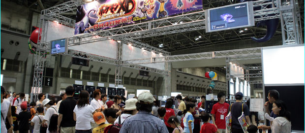
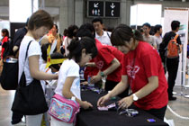
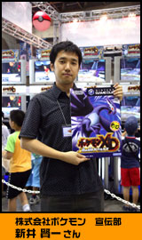

|
|
|  |
発売前でも、またソフトを手にしていない人も、やっぱり触ってみたいですよね。
そんなあなたの願いを叶えるコーナーがこちらです。
迫力の３Ｄバトルをプレイできるコーナーが用意されていますが、ここでは通常ではおぼえないわざ「リフレッシュ」をおぼえた「メタング」を、ＧＢＡ版「ポケットモンスター」シリーズ（ルビー・サファイア・ファイアレッド・リーフグリーン・エメラルド）のカートリッジにプレゼントしてくれるという太っ腹ぶり。
メタングが欲しい人も、『ポケモンＸＤ』を遊んでみたい人も、ぜひ会場で触れてみて下さいね。

|

『ポケモンＸＤ 闇の旋風ダーク・ルギア』は、ゲームボーイアドバンスのポケモンシリーズをプレイして下さっているみなさんはもちろん、これまでポケモンゲームに触れたことがない方々にも体験して頂きたい、新しいポケモンのＲＰＧです。
『ＸＤ』とは『エクストラディメンジョン』のこと。まさに"別次元"と呼ぶにふさわしい内容になっています。新しいポケモンの世界を楽しんでいただけるだけでなく、純粋に一本のＲＰＧとしても楽しんで頂けると思います。
今回のポイントのひとつは、そのシナリオにあります。悪のトレーナーによってココロを閉ざされてしまったポケモン、"ダークポケモン"を救うという部分に大きな焦点が当たっているのです。
かわいそうなポケモンたちを救い出すために力をあわせて悪の組織に立ち向かう人々、そして成長していく主人公の姿に注目してほしいですね。
もちろん物語だけでなくゲームの色々なところにまで様々な工夫がなされています。中でもダークポケモンのココロを開く、"リライブ"という要素に、新しいシステム、"リライブホール"が登場しました。
これによってリライブを強力に進めていくことができるようになっており、スムーズに冒険をすすめることができるようになっています。
個人的にオススメしたいのは、『バトルディスク』というミニゲームですね。様々な条件つきのバトルがとても奥深く、楽しいものになっています。持てる知識を駆使しないとなかなかクリアできませんから、中級〜上級のプレイヤーでもじっくり楽しむことができますよ。
みなさんも、ぜひこの夏は、『ポケモンＸＤ 闇の旋風ダーク・ルギア』で、ダークポケモンを救う冒険の旅に出て下さいね！
|
|